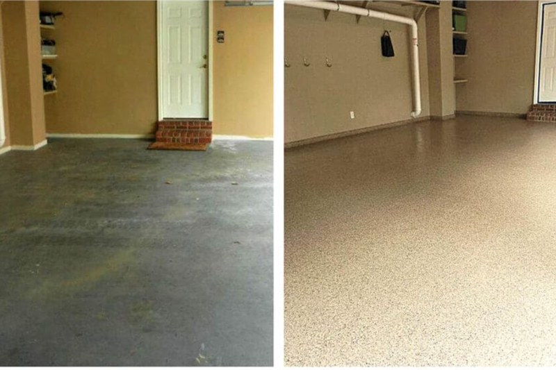
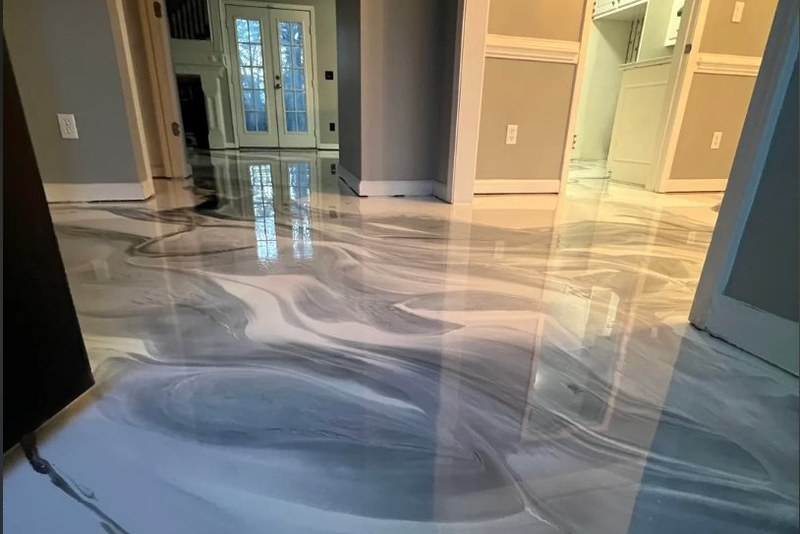
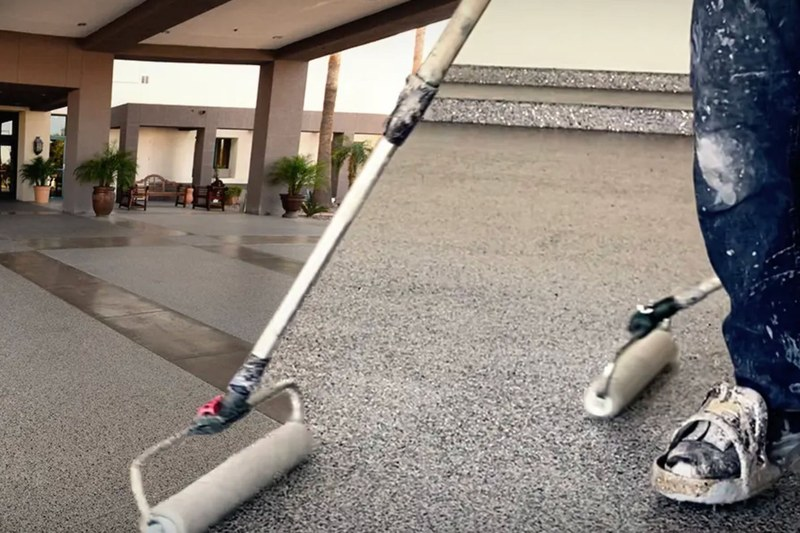
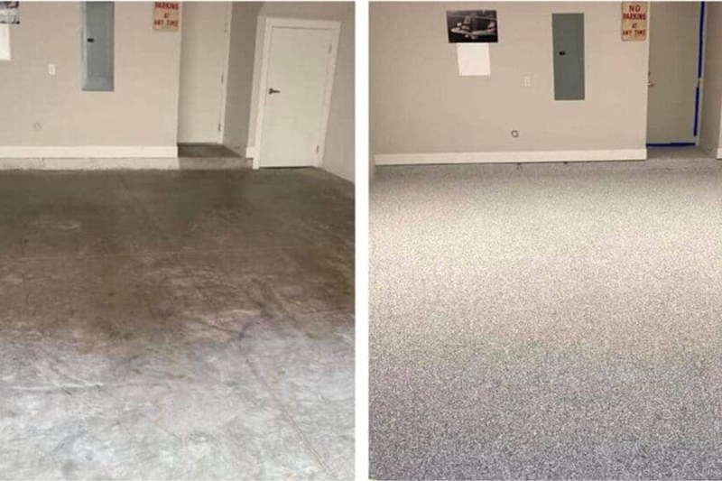
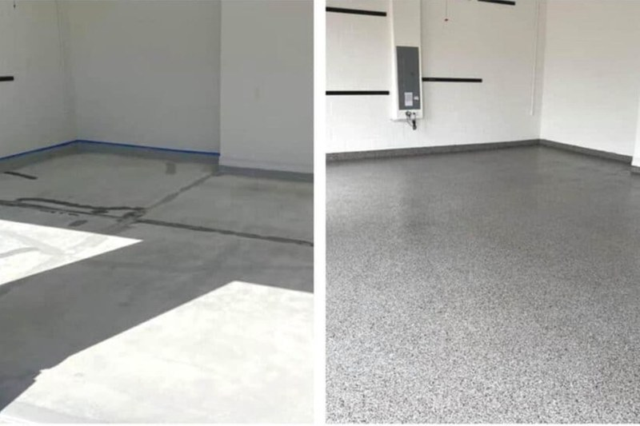

Our Epoxy Flooring Services in Miramar
From residential garage floors to large commercial spaces, we install premium epoxy coatings built for Florida's heat and humidity.

Garage Floor Epoxy
Turn your dull concrete garage into a showroom-quality floor. Our garage epoxy is slip-resistant, chemical-resistant, and easy to clean.
Learn More →
Metallic Epoxy Flooring
Create a one-of-a-kind three-dimensional effect with our metallic epoxy — perfect for showrooms, retail spaces, and living areas.
Learn More →
Commercial Epoxy Coatings
Heavy-duty epoxy systems for warehouses, auto shops, restaurants, and industrial facilities throughout the Miramar area.
Learn More →
Flake & Chip Epoxy
Add color and texture with our decorative flake broadcast system. Hides imperfections, adds grip, and looks great for years.
Learn More →
Polyaspartic Coatings
One-day installation with UV-stable, fast-curing polyaspartic coatings ideal for Florida's intense sun and humidity.
Learn More →
Concrete Resurfacing
Cracked, pitted, or stained concrete? We prep and resurface your existing slab before applying any coating for maximum adhesion.
Learn More →